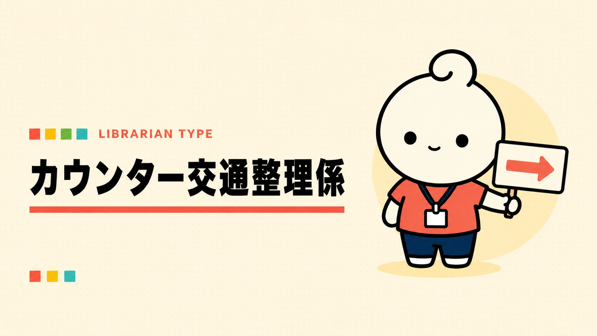

あなたの図書館員タイプは……
カウンター交通整理係

混んできたら、頭の中に交差点。
複数の利用者が同時に来ても、誰からどう対応するかを自然と考えているタイプ。いろいろ重なっても、気がつけばカウンターを回しています。
こんなこと、ちょっと好きかも
- 一言声をかけて待ってもらう
- 複数の対応を頭の中で並べる
- ピーク後の静けさ
※もちろん、だいたいです。
← もう一度やるYAWATOSHO GAMES / PICK 01
あなたにおすすめのYAWATOSHO GAME
GAME / 01
LIBRARY RUSH
ライブラリーラッシュ — カウンターは大忙し！